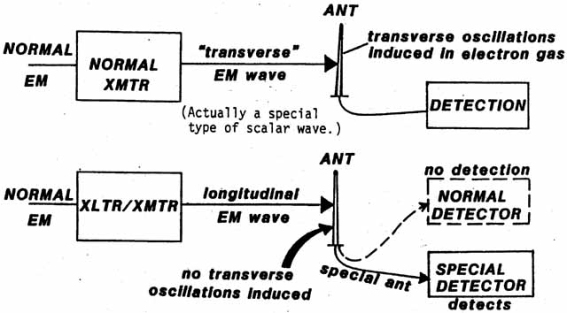

SLIDE 35.
DETECTION OF
TRANSVERSE AND LONGITUDINAL WAVES

In the top
drawing on this slide, we show a normal transmitter putting out a normal
EM wave, which received in a normal antenna/receiver. What we call
a "transverse" wave rigorously exists only in
the electron gas in the transmitting antenna and in the electron gas in
the receiving antenna. Specifically, a longitudinal wave exists in
the vacuum in between the two antennas. However, due to the method
of production, the longitudinal wave contains spin-holes for electrons,
so the electrons in the receiving antenna readily couple with the wave
by falling into and meshing their spins with the spins of the
spin-vortex holes. Electron precession produces electron gas waves
that are transverse oscillatory, hence Hertzian waves in nature. |